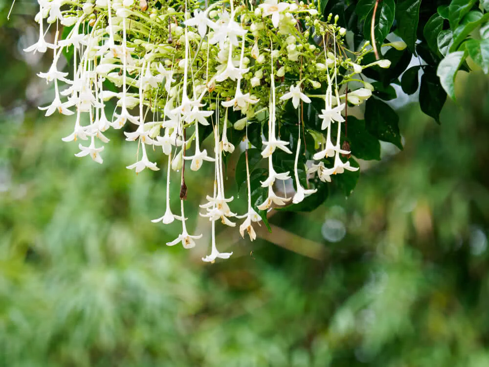
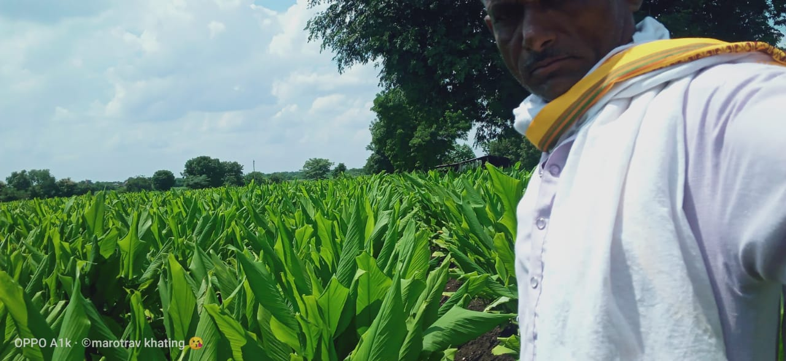

गोपाल नैसर्गिक शेणखताचे फायदे
- रासायनिक खतामुळे होणारे दुष्परिणाम टाळून जमिनीचा पोत सुधारतो
- गोमूत्रमिश्रित असल्याने त्यातील विविध क्षार, संप्रेरके, झाडाची रोगप्रतिकारकशक्ती वाढविण्यास मदत करतात.
- गांडूळ व जीवाणूंची संख्या वाढविण्यास मदत होते. त्यामुळे जमीन भुसभुशीत होऊन तिच्यात हवा खेळती राहते
- नत्र, स्फुरद, पालाश इ. मुख्य अन्नघटक व सेंद्रिय कार्बन यांच्यामुळे पिकांची भरघोस वाढ होते.
- जमिनीची जलसंधारण क्षमता वाढते
- सूक्ष्मजीवाणू, फॉस्फेट सॉल्युबिलायझिंग बॅक्टेरियामुळे झाडांच्या वाढीस मदत होते.
- गोपाळ खताच्या वापरामुळे उत्पादनाचा रंग, चमक, चव तसेच साठवणूक क्षमता सुधारण्यास मदत होते
- उत्पादन खर्च कमी येतो व शेती उत्पन्न वाढविण्यास मदत होते
.jpeg)
शेती वापरासाठी
.jpeg)
घरगुती वापरासाठी
गोपाल नैसर्गिक शेणखत वापराची पद्धत व मात्रा
खालील झाडांना नैसर्गिक खताची मात्रा मोहोर येण्यापूर्वी द्यावी.
फळाचे प्रकार:-
आंबा, चिकू:- ५ ते ६ किलो (पाच वर्षापर्यंत) ८ ते ९ किलो (पाच वर्षांवरील झाडांना)
पपया :-५ किलो लागवडीच्या वेळेस आणि २ ते ३ किलो मोहोर येण्यापूर्वी
नारळ, सुपारी:-(५ ते ६ किलो (पाच वर्षापर्यंत) ७ ते ८ किलो (पाच वर्षांवरील झाडांना)
कोकम :-३ ते ४ किलो (पाच वर्षापर्यंत) ५ ते ६ किलो (पाच वर्षांवरील झाडांना)
काजू, फणस, सफरचंद :-५ ते ६ किलो (पाच वर्षापर्यंत) ६ ते ८ किलो (पाच वर्षांवरील झाडांना)
डाळिंब, संत्र, लिंबू :-३ ते ४ किलो (पाच वर्षापर्यंत)५ ते ८ किलो (पाच वर्षांवरील झाडांना)
इतर फळझाडे :-४ ते ५ किलो प्रति झाडास,
द्राक्ष (एप्रिल छाटणीवेळी) :-३ किलो प्रति झाडास.
(ऑक्टोबर छाटणीपूर्वी) :-३ ते ४ किलो प्रति झाडास
भाज्या :-
टॉमेटो:-फुल धरते वेळेस १ किलो प्रति झाडास
घोसाळी:-फुल धरते वेळेस १ किलो प्रति झाडास
मिरची:-फुल धरते वेळेस १ किलो प्रति झाडास
वाल:-फुल धरते वेळेस १ किलो प्रति झाडास
दोडका:-फुल धरते वेळेस १ किलो प्रति झाडास
दुधीभोपळा:-फुल धरते वेळेस १ किलो प्रति झाडास
फुलझाडे :-
कुडीमधील रोपांसाठी:-रोपांची वाढ विचारात घेता ४०० ते ७०० ग्रॅम खत वापरावे.
गुलाब, मोगरा:-छाटणीनंतर प्रति झाड १.५ ते २ किलो किंवा ९०० ते १००० किलो प्रति एकर.
झेंडू लागवडीपूर्वी:-प्रति एकर ११०० किलो
ऊस, तांदूळ, नाचणी, गहू आणि इतर सर्व पिकांना सरासरी ११०० किलो गोपाल सेंद्रिय शेण खत प्रति एकर वापरावे. तसेच बियाण्यांच्या पेरणीसाठी किंवा लागवडीसाठी जमीन तयार करत असताना ८०० किलो प्रति एकर वापरावे.
४० किलोच्या पॅकिंग मध्ये उपलब्ध
फक्त देशी गाईचे शेण, गोमूत्र आणि पालापाचोळा यांच्या मिश्रणातून तयार केलेले परिपूर्ण शेणखत.
- देशी गायीचे खत असल्याने इतर ब्रेडपेक्षा 10 पटीने अधिक फायदेशीर
- मातीची उत्पादकता वाढवण्यासाठी लाखो फायदेशीर सूक्ष्मजीव वाढवते
- 100% नैसर्गिक
- एरोबिकली कपोस्ट वास नाही
- गायींना बाराही महिने नैसर्गिकरित्या आहार
contents
Manganese(Mn):-0.053%
Org.Matter:-66.78%
Copper(u):-0.0056%
Potassium(K):-0.85%
Moisture At 1050C:-61.56%
Boron(B):-0.0017%
p H:-8.12%
Iron(Fe):-0.97%
Nitrogen(N):-2.23%
Phosphorous(P):-1.25%
Molybdenum(Mo):-0.002%
Usage:-
For potted plants:-Mix soil and Gopal shen Khat in plot
For field:-Mix Gopal Shen Khat in soil before irrigation.
Results


Available Packings
1Kg:-100 R.s
40Kg:-790 R.s